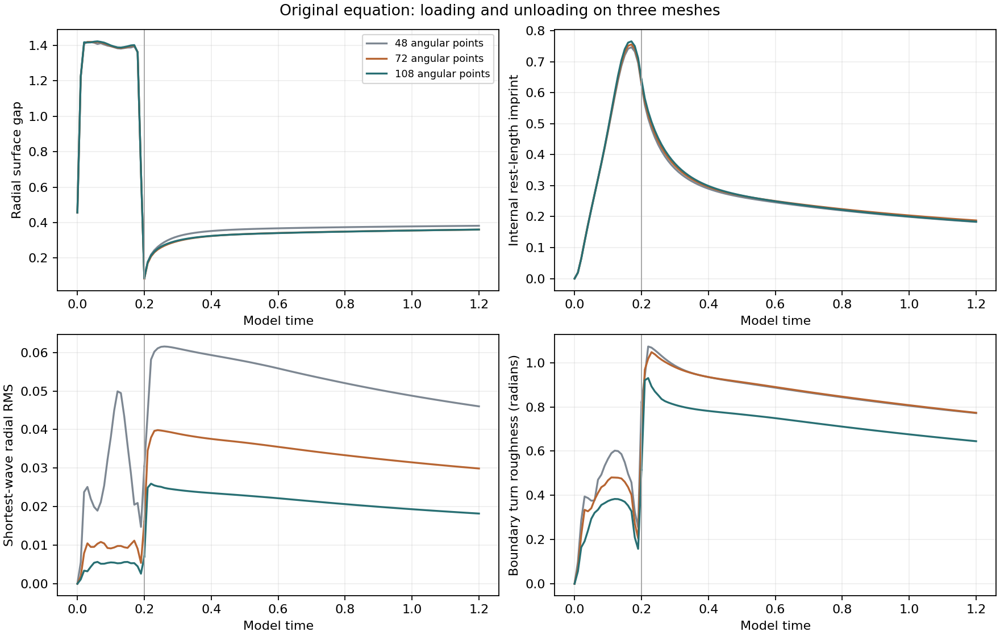
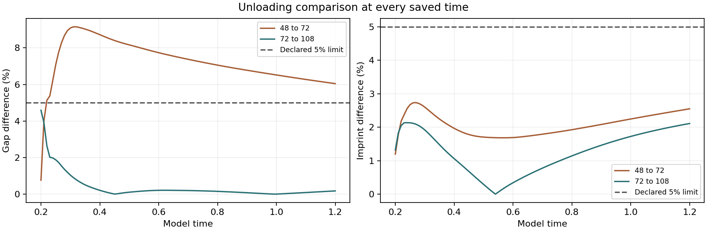
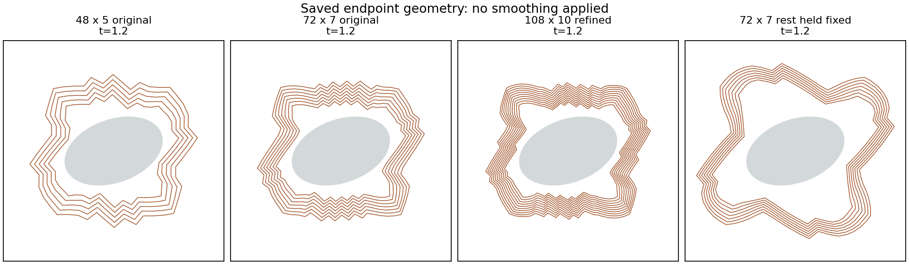
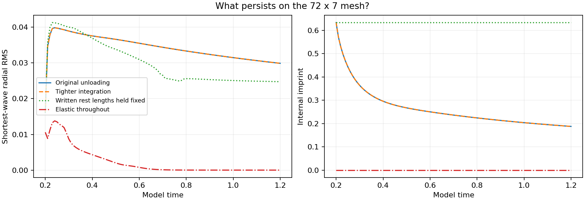
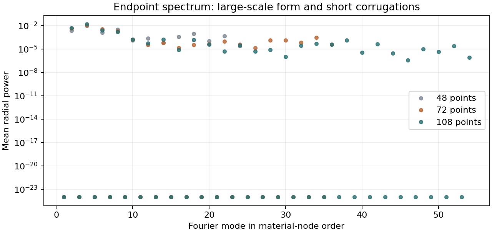
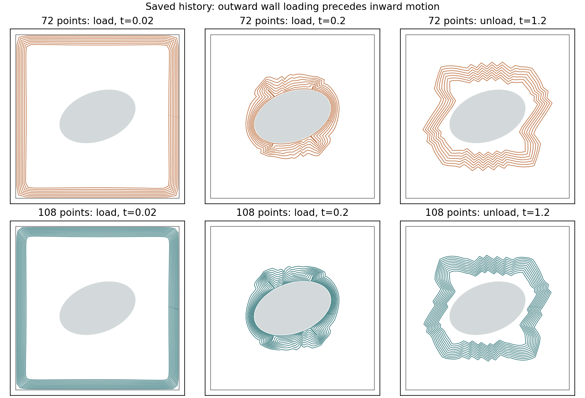

Refining the unloading shape and its zigzags
The bounded comparison has finished. 4 of 4 new integrations completed.
This is the same dimensionless molding model, with feedback off. The object, wall, material coefficients and model interval are unchanged. New data are kept separately from the original experiment.
What the refinement found
- The finer gap comparison passes: 72 x 7 versus 108 x 10 differs by at most 4.59% during unloading, below the original 5% limit. At t=1.2 the gap difference is 0.18%. The earlier 48-to-72 failure remains part of the record.
- The zigzag detail still depends on the mesh: endpoint short-wave RMS falls from 0.0460 to 0.0299 to 0.0182; its strongest short-wave modes are 18, 34 and 38. Overall gap agreement does not validate the individual teeth.
- Tighter unloading integration barely changes the result. Time integration error in this unloading interval is unlikely to explain the zigzags.
- Holding the written spring lengths fixed keeps corrugations. Continued internal reshaping after release changes the pattern, but is not required for it to persist.
What each control tests
- 108 x 10 mesh: fresh loading to 0.2 and unloading to 1.2, compared with saved 48 x 5 and 72 x 7 histories. Internal rest lengths are not interpolated from a coarse mesh.
- Tighter integration: the identical 72 x 7 unloading checkpoint, with tenfold tighter tolerances and half the maximum step.
- Written rest lengths held fixed: the identical loaded checkpoint, disabling only subsequent rest-length evolution. This keeps the already-written imprint and elastic/contact forces.

Spatial refinement
| Phase | Meshes | Observable | Largest difference (%) | Original 5% limit |
|---|---|---|---|---|
| load | 48 to 72 | gap | 0.807683 | pass |
| load | 48 to 72 | imprint | 1.5816 | pass |
| load | 72 to 108 | gap | 4.58851 | pass |
| load | 72 to 108 | imprint | 1.35273 | pass |
| unload | 48 to 72 | gap | 9.1514 | fail / unresolved |
| unload | 48 to 72 | imprint | 2.73658 | pass |
| unload | 72 to 108 | gap | 4.58851 | pass |
| unload | 72 to 108 | imprint | 2.13587 | pass |
Differences use |coarse − fine| / max(floor, |fine|) at every saved time; the floors are 0.01 for gap and 0.001 for imprint.
The largest 72-to-108 gap difference occurs at t=0.20, the inherited loading endpoint. The unloading imprint difference reaches 2.14%. All four new 72-to-108 gap/imprint comparisons pass their original limits. Across both mesh pairs, 7 of 8 comparisons pass; the historical 48-to-72 unloading gap still fails at 9.15%.
This supports improved agreement for these aggregate measurements over the tested interval. It does not establish a convergence order or a mesh-independent corrugated shape. The fixed k ≥ 12 band also changes: its endpoint RMS is 0.03167 at 72 points and 0.02792 at 108 points. The strongest modes in the mesh-relative short-wave bands have only 2.67, 2.12 and 2.84 nodes per wavelength. These are poorly resolved details in material-node coordinates.
At t=1.2 the fine mesh retains 28.6% of its loaded rest-length imprint. It is fading over the recorded interval; no permanent free shape has been demonstrated.


| Endpoint | Gap | Imprint | Grid-band radial RMS | Common-band RMS | Turn roughness |
|---|---|---|---|---|---|
| case-unload-n48-plastic1-feedback0 | 0.381876 | 0.182918 | 0.0460171 | 0.0460171 | 0.772055 |
| case-unload-n72-plastic1-feedback0 | 0.360107 | 0.187706 | 0.0298952 | 0.03167 | 0.773636 |
| unload-n108 | 0.360751 | 0.183824 | 0.0182107 | 0.0279153 | 0.644944 |
| fixed-rest-unload-n72 | 0.699892 | 0.633644 | 0.0247503 | 0.0330745 | 0.440548 |
| case-unload-n72-plastic0-feedback0 | 0.42893 | 0 | 9.8637e-08 | 4.83354e-06 | 0.00106488 |
Time integration and material memory
Completed fixed-memory control: at t=1.2, the short-wave radial RMS is 0.0247503 with written rest lengths held fixed, versus 0.0298952 with continued evolution. The common-band RMS is 0.0330745 versus 0.03167. Corrugations persist in both cases, but their shape and spectrum differ. Continued rest-length evolution after release is therefore not required for corrugations to remain in this loaded 72 x 7 state. This does not separate the earlier written memory from the earlier deformed geometry.
The fixed-rest imprint remains 0.633644 by construction; the evolving case falls to 0.187706. Locking an internal variable does not lock the positions: the fixed-rest shape continues to relax mechanically. This finite interval does not establish a permanent equilibrium.
Completed temporal control: tighter unloading integration reproduces the original gap and corrugation histories within 8 parts in a billion under the declared relative measures. Unloading integration error is unlikely to explain the pattern. Both controls begin at the same saved loaded state, so this does not independently validate the earlier loading integration.

More precise repeat: all three checks passed
We repeated the release and relaxation from the same saved 72 x 7 starting state, using ten times stricter numerical tolerances and half the maximum time step.
| What we checked | Result | How close were the two calculations? |
|---|---|---|
| Gap between the material and the object | Passed | The largest relative difference was about 6.3 parts per billion. |
| Strength of the small zigzags | Passed | The largest relative difference was about 7.2 parts per billion. |
| Mesh positions and stored spring lengths | Passed | The largest normalized difference used only 0.029% of the allowed limit. |
In plain language: Making the unloading calculation more precise gave essentially the same result, including the zigzags. Numerical timing error during unloading is therefore unlikely to explain them.
These checks measure agreement between two calculations. They cover unloading from the saved state; the earlier loading stage and the effect of mesh size need their own checks. The separate mesh comparison above still shows that individual zigzags depend on resolution.
Where the short waves appear

The spectral diagnostics use material-node order. The shortest-wave band starts at a quarter of the angular node count; its cutoff changes with the mesh. The common band starts at mode 12 for every mesh. A changing grid-band RMS alone does not prove convergence of one fixed physical wavelength. Dots represent separate Fourier modes, with display values clipped below 10-24; this plotting floor is not applied to the stored power or RMS calculations.

The initial negative drive X pushes the material outward. At t=0.01 the nearest wall clearance is already 0.0284, inside the wall force's 0.04 activation distance, and short waves are visible in the numerical diagnostics. Later X changes sign and the material moves inward. Thus corrugations and imprint are already present before the unloading switch. The square wall is an active mechanical boundary in this mesh experiment.
Small corrugations are already present in the earlier elastic and plastic loading histories. The earlier purely elastic history largely loses them during unloading, while the plastic history retains them. The control with fixed written rest lengths tests whether continued rest-length evolution is necessary after release.
What explains the zigzags?
The evidence points to short spatial scales in the spring mesh and its loaded material state. The shape first spreads toward the square wall, then is pulled inward, with corrugations present before release. During that history, the springs acquire different preferred lengths. On release the positions relax under elastic, area and contact forces. Keeping those preferred lengths fixed still allows a corrugated shape, while allowing them to evolve changes its size and spectrum. The earlier elastic-only history has a different loaded state and largely smooths out; it is supporting context, not a matched-state test of memory alone.
The source model assigns evolving preferred lengths to individual springs. Its spring, area, contact and cell-quality energies contain no explicit bending or curvature penalty linking adjacent elements. Compressed springs have a negative transverse contribution to their own stiffness; other energy terms also act, so that observation alone does not prove instability of the complete system. The role of the square wall has not been isolated by a separate boundary intervention.
These tests identify numerical sensitivity and dependence on model mechanisms. They cannot establish that the corrugations are physical clay wrinkles. The material remains dimensionless, and a finite retained imprint does not establish permanent free shape. Choosing a physically justified bending or material length scale would be a new model study; it was not added to this refinement.
Verification
All four requested runs reached their endpoints, with no integration failures. The saved states are finite and pass geometry checks; the recorded swept-step safeguards also pass. The frozen inputs and 11 numerical manifest entries match their hashes. Same-checkpoint controls, fixed rest lengths, the fresh fine-grid start, and continuity across fine-grid unloading were checked. Removing preload changes potential energy by -1.2900535413; this is accounted for as switching work.
Separate material and combined energy budgets were recomputed from saved states and work records. Each scaled residual is below the declared 0.001 limit:
| Run | Material residual | Combined residual | Budget check |
|---|---|---|---|
| tight-unload-n72 | 9.39e-09 | 1.1e-08 | pass |
| fixed-rest-unload-n72 | 6.2e-08 | 4.41e-08 | pass |
| load-n108 | 5.58e-08 | 6.8e-09 | pass |
| unload-n108 | 7.4e-08 | 1.17e-07 | pass |
Four directional Jacobian checks pass (largest relative error 2.10 × 10-8). No extra integrations, altered equations or relaxed accuracy limits were used to obtain these results.
Saved verification and failures
[
{
"name": "tight-unload-n72",
"complete": true,
"finite": true,
"geometry": true,
"material_budget": 9.388787840358075e-09,
"combined_budget": 1.1040020797658958e-08,
"failure": null,
"recomputed_material_budget": 9.388787840358075e-09,
"recomputed_combined_budget": 1.1040020797658958e-08,
"budget_records_match": true,
"budgets_pass": true,
"saved_geometry": true,
"saved_times_match": true,
"same_unloading_checkpoint": true,
"matched_parameters": true,
"record_source_hashes_match": true
},
{
"name": "fixed-rest-unload-n72",
"complete": true,
"finite": true,
"geometry": true,
"material_budget": 6.203484447476328e-08,
"combined_budget": 4.4082751340585246e-08,
"failure": null,
"recomputed_material_budget": 6.203484447476328e-08,
"recomputed_combined_budget": 4.4082751340585246e-08,
"budget_records_match": true,
"budgets_pass": true,
"saved_geometry": true,
"saved_times_match": true,
"same_unloading_checkpoint": true,
"matched_parameters": true,
"record_source_hashes_match": true,
"recomputed_locked_rest_change": 0.0,
"locked_rest_record_matches": true,
"rest_lengths_locked": true
},
{
"name": "load-n108",
"complete": true,
"finite": true,
"geometry": true,
"material_budget": 5.576273088213245e-08,
"combined_budget": 6.8028618614591584e-09,
"failure": null,
"recomputed_material_budget": 5.576273088213245e-08,
"recomputed_combined_budget": 6.8028618614591584e-09,
"budget_records_match": true,
"budgets_pass": true,
"saved_geometry": true,
"saved_times_match": true,
"matched_parameters": true,
"same_physical_start": true,
"record_source_hashes_match": true
},
{
"name": "unload-n108",
"complete": true,
"finite": true,
"geometry": true,
"material_budget": 7.399289249955314e-08,
"combined_budget": 1.1667893219758626e-07,
"failure": null,
"recomputed_material_budget": 7.399289249955314e-08,
"recomputed_combined_budget": 1.1667893219758626e-07,
"budget_records_match": true,
"budgets_pass": true,
"saved_geometry": true,
"saved_times_match": true,
"same_unloading_checkpoint": true,
"switch_energy_match": true,
"matched_parameters": true,
"record_source_hashes_match": true
}
]All diagnostics · Frozen protocol · Progress · Final verification record · Numerical file hashes · Original comparison and all saved files (ZIP)